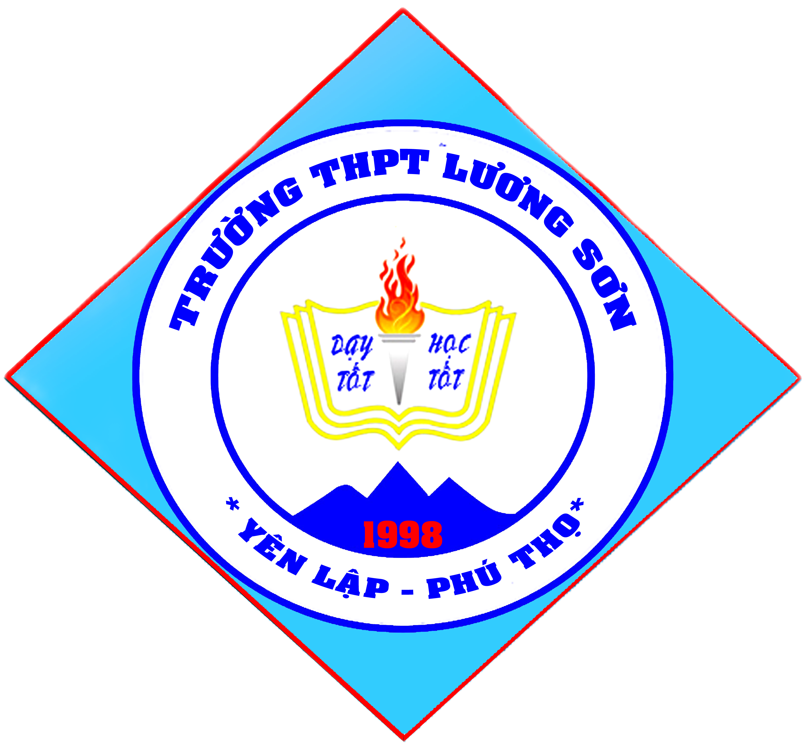

|  |
ĐẾM NGƯỢC THI TỐT NGHIỆP THPT NĂM 2024 |
Mặt Trời là ngôi sao ở trung tâm Hệ Mặt Trời, chiếm khoảng 99,8% khối lượng của Hệ Mặt Trời.[6] Trái Đất và các thiên thể khác như các hành tinh, tiểu hành tinh, thiên thạch, sao chổi, và bụi quay quanh Mặt Trời. Khoảng cách trung bình giữa Mặt Trời và Trái Đất xấp xỉ 149,6 triệu kilômét (1 Đơn vị thiên văn AU) nên ánh sáng Mặt Trời cần 8 phút 20 giây mới đến được Trái Đất. Trong một năm, khoảng cách này thay đổi từ 147,1 triệu kilômét (0,9833 AU) ở điểm cận nhật (khoảng ngày 3 tháng 1), tới xa nhất là 152,1 triệu kilômét (1,017 AU) ở điểm viễn nhật (khoảng ngày 4 tháng 7).[7] Năng lượng Mặt Trời ở dạng ánh sáng hỗ trợ cho hầu hết sự sống trên Trái Đất thông qua quá trình quang hợp,[8] và điều khiển khí hậu cũng như thời tiết trên Trái Đất.
Sao Thủy (tiếng Anh: Mercury) là hành tinh nhỏ nhất và gần Mặt Trời nhất trong tám hành tinh thuộc hệ Mặt Trời,[a] với chu kỳ quỹ đạo bằng khoảng 88 ngày Trái Đất. Nhìn từ Trái Đất, hành tinh hiện lên với chu kỳ giao hội trên quỹ đạo bằng xấp xỉ 116 ngày, và nhanh hơn hẳn những hành tinh khác. Tốc độ chuyển động nhanh này đã khiến người La Mã đặt tên hành tinh là Mercurius, vị thần liên lạc và đưa tin một cách nhanh chóng. Trong thần thoại Hy Lạp tên của vị thần này là Hermes (Ερμής). Do hành tinh hầu như không có khí quyển để giữ lại nhiệt lượng, bề mặt Sao Thủy trải qua sự biến đổi nhiệt độ lớn nhất trong số các hành tinh, thay đổi từ 100 K (−173 °C; −280 °F) vào ban đêm tới 700 K (427 °C; 800 °F) vào ban ngày. Trục quay của Sao Thủy có độ nghiêng nhỏ nhất trong hệ Mặt Trời (khoảng 1⁄30 độ), nhưng hành tinh lại có độ lệch tâm quỹ đạo lớn nhất.[a] Tại viễn điểm quỹ đạo, Sao Thủy ở cách xa Mặt Trời hơn 1,5 lần khi so với hành tinh ở cận điểm quỹ đạo. Bề mặt hành tinh có rất nhiều hố va chạm nhìn trông giống như bề mặt của Mặt Trăng, và hành tinh không còn hoạt động địa chất trong hàng tỷ năm trước.
Sao Kim (tiếng Anh: Venus) là hành tinh thứ 2 trong hệ Mặt Trời, tự quay quanh nó với chu kỳ 224,7 ngày Trái Đất.[10] Xếp sau Mặt Trăng, nó là thiên thể tự nhiên sáng nhất trong bầu trời tối, với cấp sao biểu kiến bằng −4.6, đủ sáng để tạo nên bóng trên mặt nước.[12] Bởi vì Sao Kim là hành tinh phía trong tính từ Trái Đất, nó không bao giờ xuất hiện trên bầu trời mà quá xa Mặt Trời: góc ly giác đạt cực đại bằng 47,8°. Sao Kim đạt độ sáng lớn nhất ngay sát thời điểm hoàng hôn hoặc bình minh, do vậy mà dân gian còn gọi là sao Hôm, khi hành tinh này hiện lên lúc hoàng hôn, và sao Mai, khi hành tinh này hiện lên lúc bình minh. Sao Kim bị bao bọc bởi lớp mây dày có tính phản xạ cao chứa axít sunfuric,[13] và khiến chúng ta không thể quan sát bề mặt của nó dưới bước sóng ánh sáng khả kiến. Mật độ không khí trong khí quyển của nó lớn nhất trong số bốn hành tinh đất đá, thành phần chủ yếu là cacbon dioxide. Áp suất khí quyển tại bề mặt hành tinh cao gấp 92 lần so với của Trái Đất. Với nhiệt độ bề mặt trung bình bằng 735 K (462 °C), Sao Kim là hành tinh nóng nhất trong hệ Mặt Trời.
Trái Đất (tiếng Anh: Earth), là hành tinh thứ ba tính từ Mặt Trời, đồng thời cũng là hành tinh lớn nhất trong các hành tinh đất đá của hệ Mặt Trời xét về bán kính, khối lượng và mật độ của vật chất. Trái Đất còn được biết tên với các tên gọi "hành tinh xanh", là nhà của hàng triệu loài sinh vật,[13] trong đó có con người và cho đến nay nó là nơi duy nhất trong vũ trụ được biết đến là có sự sống. Hành tinh này được hình thành cách đây khoảng 4,55 tỷ năm[14][15][16][17] và sự sống xuất hiện trên bề mặt của nó khoảng 1 tỷ năm trước. Kể từ đó, sinh quyển, khí quyển của Trái Đất và các điều kiện vô cơ khác đã thay đổi đáng kể, tạo điều kiện thuận lợi cho sự phổ biến của các vi sinh vật ưa khí cũng như sự hình thành của tầng ôzôn-lớp bảo vệ quan trọng, cùng với từ trường của Trái Đất, đã ngăn chặn các bức xạ có hại và chở che cho sự sống.[18] Các đặc điểm vật lý của Trái Đất cũng như lịch sử địa lý hay quỹ đạo, cho phép sự sống tồn tại trong thời gian qua. Người ta ước tính rằng Trái Đất chỉ còn có thể hỗ trợ sự sống thêm 1,5 tỷ năm nữa, trước khi kích thước của Mặt Trời tăng lên (trở thành sao khổng lồ đỏ) và tiêu diệt hết sự sống. Khoảng hơn 70% bề mặt Trái Đất được bao phủ bởi các đại dương nước mặn, phần còn lại là các lục địa và các đảo. Nước là thành phần rất cần thiết cho sự sống và cho đến nay con người vẫn chưa phát hiện thấy sự tồn tại của nó trên bề mặt của bất kì hành tinh nào khác ngoại trừ sao Hỏa (Hỏa Tinh) là có nước bị đóng băng ở hai cực.[note 3][note 4] Tuy nhiên, người ta có chứng cứ xác định nguồn nước có ở Sao Hỏa trong quá khứ, và có thể tồn tại cho tới ngày nay.[20] Lõi của Trái Đất vẫn hoạt động được bao bọc bởi lớp manti rắn dày, lớp lõi ngoài lỏng tạo ra từ trường và lõi sắt trong rắn.
Sao Hỏa (tên tiếng Anh là: Mars) là hành tinh thứ tư ở Hệ Mặt Trời. Sao Hoả được xếp loại là hành tinh đất đá và màu cam đỏ do bề mặt của hành tinh được bao phủ bởi lớp vụn sắt(III) ôxít. Vì bán cầu Bắc của Sao Hoả có bồn trũng Bắc Cực chiếm đến 40% diện tích hành tinh, so bán cầu Nam thì bán cầu Bắc phẳng hơn và ít hố va chạm hơn. Khí quyển của Sao Hoả khá mỏng với thành phần chính là cácbon điôxít. Ở hai cực Sao Hoả là lớp băng bằng nước. Sao Hoả có hai vệ tinh tự nhiên: Phobos và Deimos. Một ngày ở trên Sao Hoả dài khoảng 24,5 tiếng và Sao Hoả có các mùa giống như ở trên Trái Đất, vì hành tinh này có trục quay nghiêng 25°. Thời gian để Sao Hoả quay một vòng quanh Mặt Trời là 1,88 năm Trái Đất. Nhiệt độ trên bề mặt Sao Hoả biến thiên khá nhiều, thường rơi khoảng từ −110 °C đến 35 °C. Vỏ ngoài của Sao Hoả có nhiều nguyên tố silicon, oxy (trong dạng ôxít) và sắt, lớp phủ ở bên trong vỏ chứa silicat rắn, còn lớp lõi ở bên trong cùng chứa nhiều nguyên tố sắt, niken và lưu huỳnh. Sao Hoả hiện tại có nhiều biến động về địa chất, với những cơn lốc xoáy làm bay bụi và các trận động đất xảy ra thường xuyên. Trên Sao Hoả có Olympus Mons là đỉnh núi cao nhất và hẻm núi Valles Marineris thuộc dạng dài nhất trong Hệ Mặt Trời. Sao Hoả được hình thành 4,5 tỷ năm trước. Ở Kỷ Noachian từ khoảng 4,1 đến 3,7 tỷ năm trước, trên bề mặt hành tinh bị phong hoá rất mạnh và thiên thạch đâm rất nhiều, hình thành nên các dãy núi lửa, thung lũng, vùng trũng và biển. Kỷ Hesperian từ 3,7 đến khoảng 3,2–2 tỷ năm trước được đánh dấu bởi các vụ phun trào núi lửa và lũ lụt mạnh, tạo ra những bãi hạ nguồn ngoằn nghèo trên bề mặt. Kỷ Amazonian từ đó đến nay thì so với các kỷ trước thì ít hoạt động địa chất hơn. Dù có nhiều bằng chứng cho thấy nước ở dạng lỏng đã từng tồn tại khá lâu ở trên Sao Hoả, chưa có bằng chứng cụ thể nào cho thấy sự sống đã từng tồn tại trên Sao Hỏa.
Sao Mộc (tiếng Anh: Jupiter) là hành tinh thứ năm tính từ Mặt Trời và là hành tinh lớn nhất trong Hệ Mặt Trời.[12] Nó là hành tinh khí khổng lồ với khối lượng bằng một phần nghìn của Mặt Trời nhưng bằng hai lần rưỡi tổng khối lượng của tất cả các hành tinh khác trong Hệ Mặt Trời cộng lại. Sao Mộc được xếp vào nhóm hành tinh khí khổng lồ cùng với Sao Thổ (Sao Thiên Vương và Sao Hải Vương được xếp vào hành tinh băng khổng lồ). Hai hành tinh này đôi khi được gọi là hành tinh kiểu Sao Mộc hoặc hành tinh vòng ngoài. Các nhà thiên văn học cổ đại đã biết đến hành tinh này,[13] và gắn với thần thoại và niềm tin tôn giáo trong nhiều nền văn hóa. Người La Mã đặt tên hành tinh theo tên của vị thần Jupiter, vị thần quan trọng nhất trong số các vị thần.[14] Tên gọi trong tiếng Trung Quốc, tiếng Triều Tiên, tiếng Nhật và tiếng Việt của hành tinh này được đặt dựa vào hành "mộc" trong ngũ hành. Khi nhìn từ Trái Đất, Sao Mộc có cấp sao biểu kiến −2,94, đủ sáng để tạo bóng; và là thiên thể sáng thứ ba trên bầu trời đêm sau Mặt Trăng và Sao Kim. (Sao Hỏa hầu như sáng bằng Sao Mộc khi Sao Hỏa ở những vị trí xung đối trên quỹ đạo của nó với Trái Đất).
Sao Thổ (tiếng Anh: Saturn) là hành tinh thứ sáu tính theo khoảng cách trung bình từ Mặt Trời và là hành tinh lớn thứ hai về đường kính cũng như khối lượng, sau Sao Mộc trong hệ Mặt Trời. Tên tiếng Anh của hành tinh mang tên thần Saturn trong thần thoại La Mã, ký hiệu thiên văn của hành tinh là (♄) thể hiện cái liềm của thần. Sao Thổ là hành tinh khí khổng lồ với bán kính trung bình bằng 9 lần của Trái Đất.[14][15] Tuy khối lượng của hành tinh cao gấp 95 lần khối lượng của Trái Đất nhưng với thể tích lớn hơn 763 lần, khối lượng riêng trung bình của Sao Thổ chỉ bằng một phần tám so với của Trái Đất.[16][17][18]
Sao Hải Vương (tiếng Anh: Neptune) là hành tinh thứ tám và xa nhất tính từ Mặt Trời trong Hệ Mặt Trời. Nó là hành tinh lớn thứ tư về đường kính và lớn thứ ba về khối lượng. Sao Hải Vương có khối lượng riêng lớn nhất trong số các hành tinh khí trong hệ Mặt trời. Sao Hải Vương có khối lượng gấp 17 lần khối lượng của Trái Đất và hơi lớn hơn khối lượng của Sao Thiên Vương (xấp xỉ bằng 15 lần của Trái Đất).[11] Sao Hải Vương quay trên quỹ đạo quanh Mặt Trời ở khoảng cách trung bình 30,1 AU, bằng khoảng 30 lần khoảng cách Trái Đất - Mặt Trời. Sao Hải Vương được đặt tên theo vị thần biển cả của người La Mã (Neptune). Nó có ký hiệu thiên văn là ♆, là biểu tượng cách điệu cây đinh ba của thần Neptune hoặc chữ cái psi của Hy Lạp.
Sao Diêm Vương (Pluto) là hành tinh lùn nặng thứ hai đã được biết trong Hệ Mặt Trời (sau Eris) và là vật thể nặng thứ mười trực tiếp quay quanh Mặt Trời. Trước kia nó từng được xếp hạng là một hành tinh, Sao Diêm Vương hiện được coi là thành viên lớn nhất của một vùng riêng biệt được gọi là Vành đai Kuiper.[14] Tương tự như các thành viên khác của vành đai này, nó chủ yếu gồm đá với băng và có kích thước khá nhỏ: xấp xỉ một phần năm khối lượng và một phần ba thể tích Mặt Trăng của Trái Đất. Sao Diêm Vương có quỹ đạo với độ lệch tâm lớn và rất nghiêng. Độ lệch tâm khiến nó có thể có khoảng cách từ 30 tới 49 AU (4.4—7.4 tỷ km) từ Mặt Trời, nên thỉnh thoảng Sao Diêm Vương ở gần Mặt Trời hơn Sao Hải Vương. Sao Diêm Vương và vệ tinh lớn nhất của nó, Charon, thường được coi là một hệ đôi bởi khối tâm của các quỹ đạo của chúng không nằm trong bất kỳ một vật thể nào.[15] Hiệp hội Thiên văn Quốc tế (IAU) vẫn chưa chính thức hoá một định nghĩa cho các hệ hành tinh lùn đôi, và cho tới khi họ thông qua một quyết định như vậy, Charon vẫn được xếp hạng là một vệ tinh của Sao Diêm Vương.[16] Sao Diêm Vương cũng có ba vệ tinh nhỏ hơn khác là Nix, Hydra, được khám phá năm 2005,[17] và vệ tinh P4 được khám phá năm 2011.
Uranus (tiếng la tinh là Ouranos) theo tiếng Hy Lạp nghĩa là bầu trời. Trong thần thoại Hy Lạp ông được coi là cha trời, bản thân ông là con và cũng là chồng của Gaia, mẹ đất. Uranus và Gaia được coi là tổ tông của hầu hết các vị thần Hy Lạp nhưng không được thờ cúng; Uranus cũng không xuất hiện trên các bình gốm của Hy Lạp cổ. Hầu hết người Hy Lạp cổ đại cho rằng Uranus là tổ tiên của mọi vật và coi như ông không có dòng dõi lớn hơn (cha mẹ của Uranus là không có). Dưới sự ảnh hưởng của nhà triết học Cicero trong cuốn Nguồn gốc của thần thánh (The Nature of Gods), ông ta khẳng định rằng Uranus là con của Aether (không khí) và Hemera (ngày). Theo như bài thần thánh bí hiểm (Orphic Hymns), Uranus là con trai của bóng đêm, Nyx (tiếng Roma là Caelus)